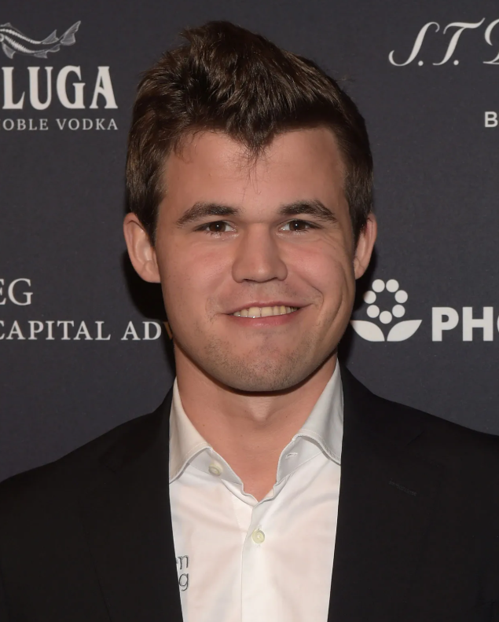

Legends of the Chess Crown
Nowdays there are a lot of very talanted chess players so here is two of them!

Magnus Carlesn
Style:He is a very good engame player that memorises very complex positions
He won the world championship over 20 times!
Hikaru Nakamura
Style:Higly dinamic, often focusing on unbalanced positions.
He is a very strong GM/Streamer that explains all his thought process live.